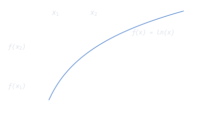

Maximum Likelihood Estimation
Let a data set $\mathbf{X} = [\mathbf{x}_1, \mathbf{x}_2, ..., \mathbf{x}_n]$, be a random sample from a distribution that depends on one or more unknown parameters $\mathbf{\theta}$ with probability function $f(\mathbf{x}_i\mid \mathbf{\theta})$, the likelihood function is: $$L(\mathbf{\theta}) = \Pi f(\mathbf{x}_i\mid \mathbf{\theta})$$
The equality uses the uppercase pi as the shorthand mathematical notation of a product of indexed terms. Our primary goal here will be to find a point estimator $u(\mathbf{x}_1, \mathbf{x}_2,..., \mathbf{x}_n)$, such that $u(\mathbf{x}_1, \mathbf{x}_2,..., \mathbf{x}_n)$ is a "good" point estimate of $\mathbf{\theta}$. The value of $\mathbf{\theta}$ that maximizesthe likelihood of getting the data we observed would be reasonable that a good estimate of the unknown parameter $\theta$. Because the "random sample" were independent, we could use the joint probability mass (or density) function of $\mathbf{X}$, to implement the method in practice.
In order to implement the method of maximum likelihood, we need to find the p that maximizes the likelihood $L(\theta)$. We need to put on our calculus hats now, since in order to maximize the function, we are going to need to differentiate the likelihood function with respect to $\theta$. In doing so, we'll use a "trick" that often makes the differentiation a bit easier. Note that the natural logarithm is an Strictly Increasing Function of $x$.
The log-likelihood function is: $$\text{log}L(\theta)=\sum \text{log}f(\mathbf{x}_i\mid \mathbf{\theta})$$